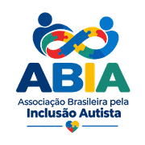
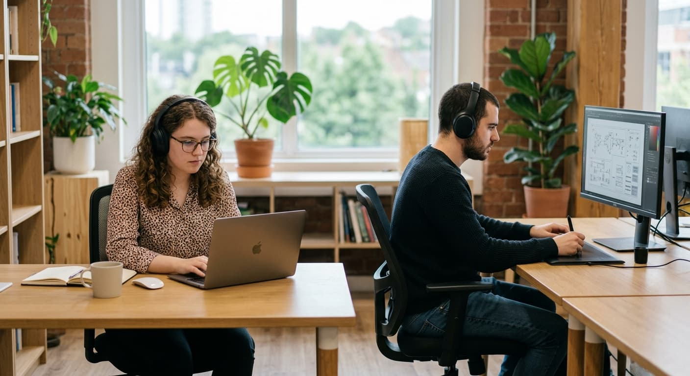
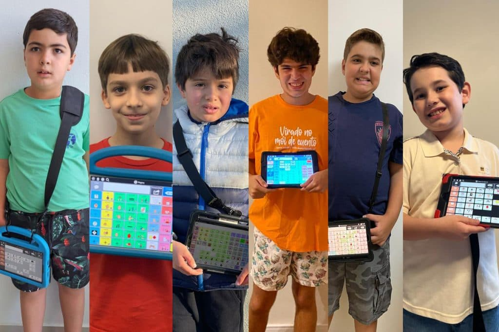
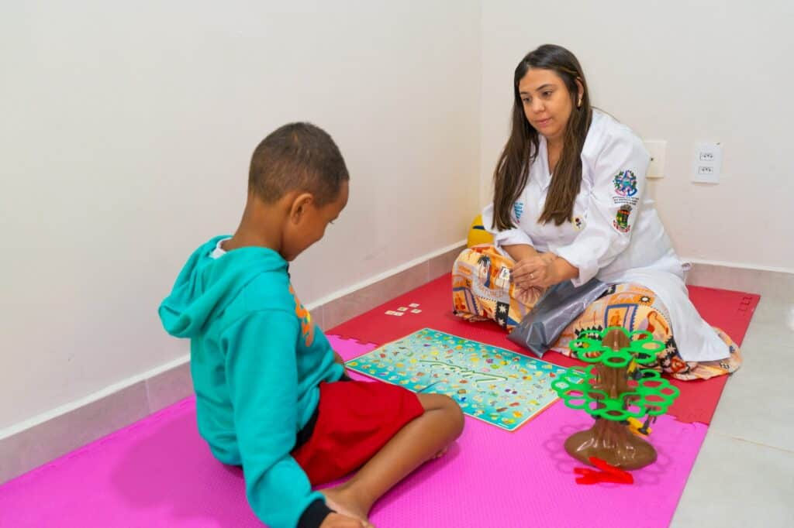

Educação Inclusiva
Formamos professores e escolas para receber e ensinar crianças autistas com metodologias adaptadas, promovendo aprendizado respeitoso às diferentes formas de processar o mundo.

Associação Brasileira pela Inclusão AutistaConheça as iniciativas que você pode apoiar como voluntário(a) ou doador(a).
Formamos professores e escolas para receber e ensinar crianças autistas com metodologias adaptadas, promovendo aprendizado respeitoso às diferentes formas de processar o mundo.
Preparamos jovens e adultos autistas para o mercado de trabalho, com capacitação profissional, apoio na busca por vagas e sensibilização de empresas parceiras sobre contratação inclusiva.

Distribuímos ferramentas de comunicação alternativa e aplicativos acessíveis que ajudam pessoas autistas não-verbais ou com dificuldades de comunicação a se expressarem com mais autonomia.

Conectamos pessoas autistas a atendimento especializado, psicólogos, terapeutas ocupacionais e outros profissionais, muitas vezes gratuito ou custo reduzido, especialmente em regiões com pouco acesso a esse tipo de cuidado.

Cada projeto conta com voluntários dedicados e o apoio de doadores que acreditam em um Brasil mais inclusivo. Escolha uma causa e faça parte dessa transformação.